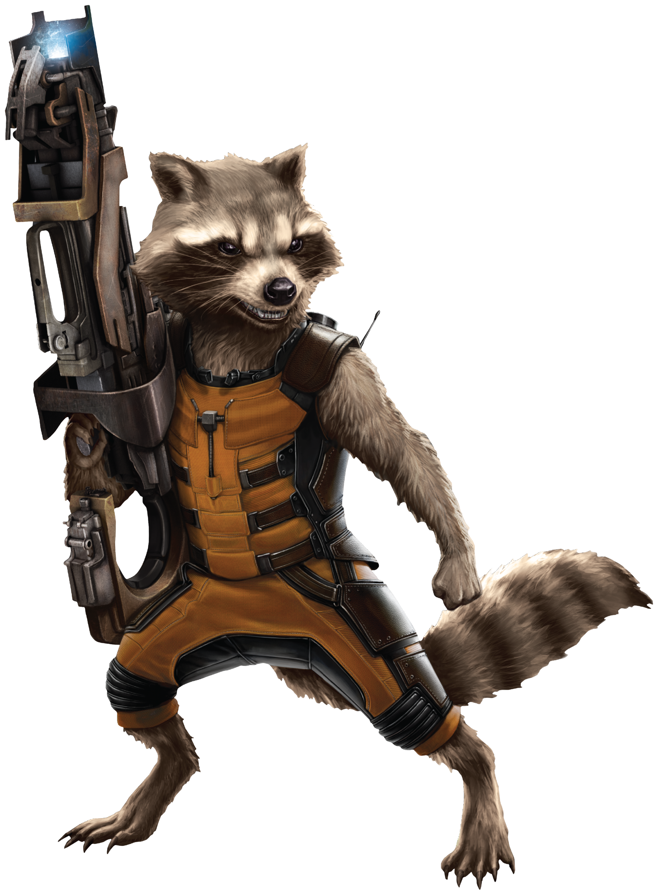
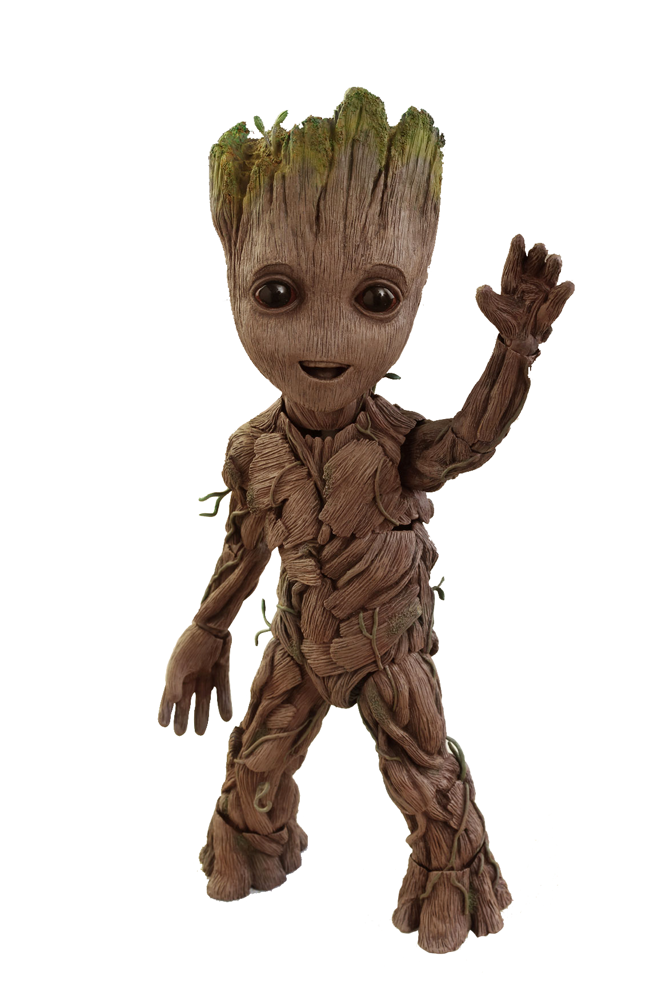
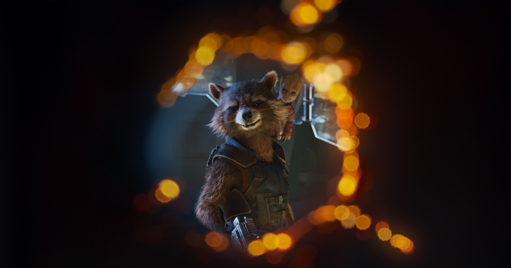

Guardians of the Galaxy
«Стражи Галактики» (англ. Guardians of the Galaxy, также известен как Guardians of the Galaxy Vol. 1[3][4]) — американский фантастический супергеройский фильм 2014 года, снятый режиссёром Джеймсом Ганном по мотивам комиксов Дэна Абнетта и Энди Леннинга (англ.)русск. издательства Marvel Comics. Является десятой картиной кинематографической вселенной Marvel. Главные роли исполнили Крис Прэтт, Зои Салдана, Дэйв Батиста, Вин Дизель и Брэдли Купер. По сюжету Питер Квилл формирует непростой союз с группой внеземных неудачников, которые спасаются бегством из тюрьмы после кражи таинственного артефакта. Николь Перлман начала работать над сценарием в 2009 году. Продюсер Кевин Файги впервые публично упомянул «Стражей Галактики» возможным фильмом в 2010 году. В июле 2012 года на San Diego Comic-Con International Marvel Studios объявил, что фильм находится в активной разработке. Джеймс Ганн был нанят, чтобы написать и снять фильм в сентябре. В феврале 2013 года Крис Прэтт был утверждён на роль Питера Квилла / Звёздного Лорда, и впоследствии другие члены актёрского состава были подтверждены. Основные съёмки начались в июле 2013 года в Shepperton Studios (англ.)русск. в Англии. Дополнительные съёмки проходили в Лондоне, а затем были завершены в октябре 2013 года. Производство фильма завершилось 7 июля 2014 года. Мировая премьера фильма состоялась в Голливуде 21 июля 2014 года. Фильм вышел на экраны 1 августа в США, а в СНГ — 31 июля в формате 3D и IMAX 3D. Кинолента приобрела критический и коммерческий успех, заработав 773,3 млн долларов в мировом прокате, а также став третьим самым кассовым фильмом 2014 года. Картина получила похвалу за свой юмор, экшн, саундтрек, визуальные эффекты, режиссуру, музыкальное сопровождение и актёрское мастерство. Сиквел «Стражи Галактики. Часть 2» вышел на экраны 4 мая 2017 года, а третий фильм «Стражи Галактики. Часть 3» находится в разработке.
Story
В 1988 году юный Питер Квилл после смерти матери был похищен инопланетянами. Они воспитали его вором, он взял себе псевдоним Звёздный Лорд. 26 лет спустя Питер Квилл прибывает на заброшенную планету Мораг, чтобы похитить таинственный артефакт — Сферу, но его ловит группа солдат из Расы Крии во главе с Коратом, которая также прибыла за Сферой, чтобы передать её фанатику Расы Крии Ронану Обвинителю. Квиллу удаётся сбежать со Сферой, но его местонахождение узнаёт Йонду — глава космических пиратов Опустошителей, который похитил с Земли Квилла и вырастил его. Питер должен был отдать Сферу ему, но решил продать её напрямую заказчику. Разгневанный Йонду назначает награду за поимку Квилла. Ронан узнаёт о том, что Сферу украл Звёздный Лорд, и поручает вернуть её убийце Гаморе. Она находит Квилла на планете Ксандар, где тот получил отказ от покупателя в связи с тем, что Сферой заинтересовался такая опасная фигура, как Ронан. Гамора пытается украсть Сферу, но Звёздный Лорд её догоняет. В их разборку вмешиваются двое охотников за наживой — разумный енот Ракета и древообразный гуманоид Грут , которые хотят получить награду за Квилла. Но их всех ловят местные правоохранительные органы — Корпус Нова, и за различные преступления сажают в тюрьму на космической станции Килн. Там Гамору пытаются убить за сотрудничество с Ронаном, который повинен в смертях родных многих заключённых, среди которых и опасный убийца Дракс Разрушитель. Но Квиллу удаётся убедить Дракса, что Гамора может помочь в уничтожении Ронана. Звёздный Лорд, Гамора, Дракс, Ракета и Грут объединяются, чтобы сбежать и продать Сферу за огромные деньги. Реактивный Енот разрабатывает план, с помощью которого команда сбегает из тюрьмы на Милано — корабле Квилла. Тем временем на Ксандаре Йонду и его правая рука Краглин допрашивают покупателя, угрожая летающей стрелой (которой Йонду управляет с помощью свиста). Через некоторое время полёта команда попадает на Рудник Забвения — место, где нет ни правил, ни законов, — где хотели продать Сферу Коллекционеру. После посадки Дракс Разрушитель, Ракета и Грут идут в игровое заведение, в другом месте Гамора и Пит беседуют, но в игровом заведении началась драка между Драксом и Грутом. После нескольких секунд активной драки Ракета берёт оружие, чтобы убить Дракса, потом вмешиваются Пит и Гамора, однако Енот снова поднимает оружие, но Пит наконец успокаивает его. Ронан связывается с Таносом, который обещал в обмен на Сферу уничтожить Ксандар, обвиняя того, что его приёмная дочь Гамора предала их. В это время герои прибывают на космическую станцию Забвение, которая расположена в черепе гиганта — останках древнего космического существа, где их должен ждать покупатель Сферы. Покупателем оказывается богатый коллекционер Танелиир Тиван. Он открывает Сферу, внутри которой находится Камень Бесконечности — могущественный артефакт, способный уничтожать планеты, но им могут владеть лишь существа большой силы. Карина, рабыня Коллекционера, пытается украсть Камень, чтобы освободиться из рабства, но сила камня уничтожает её и происходит взрыв, уничтожающий музей Тивана. Одновременно с этим опьяневший Дракс-Разрушитель вызывает Ронана, чтобы сразиться с ним. Ронан легко побеждает Дракса, а Небула, агент Ронана и другая приёмная дочь Таноса, захватывает Сферу. Гамора, которая пыталась помешать своей сестре, попадает в открытый космос. Чтобы её спасти, Звёздный Лорд сообщает Йонду своё местонахождение и следует за Гаморой в вакуум. Опустошители захватывают их, Йонду планирует убить Квилла, но тот переубеждает его, уговаривая его забрать столь ценный предмет, как Камень Бесконечности, у Ронана. Ракета, Грут и Дракс, думая, что их друзья в плену, угрожают Опустошителям, но Квилл всё разъясняет им, и троица присоединяется к команде. На своём флагмане Ронан получает камень от Небулы и вставляет в свой боевой молот, чтобы использовать его силу. Он связывается с Таносом и говорит, что теперь, с силой камня, ему не нужна помощь в уничтожении Ксандара, и что после Ксандара он уничтожит и самого Таноса. Небула предаёт своего приёмного отца и переходит на сторону Обвинителя. Флагман Ронана приближается к Ксандару, и тот сможет уничтожить планету, когда корабль достигнет её. Но Опустошители атакуют флагман, к ним присоединяются на своих кораблях Корпус Нова, который пытается сдержать флагман Ронана от приземления, создав из кораблей Корпуса живой энергетический щит в виде сети. Реактивный Енот во главе Опустошителей остаётся сражаться против кораблей Крии, пока остальные герои проникают на флагман Ронана. Они разделяются: Гамора идёт отключать защиту дверей в командный зал к Ронану, пока Квилл, Дракс и Грут сражаются с охраной Обвинителя. При этом Дракс в рукопашной схватке убивает Кората, вырвав ему из головы имплантат. Небула пытается помешать Гаморе, но лишается руки и сбегает. Герои попадают к Ронану и пытаются его убить, но злодей выживает. Он уничтожает корабли Корпуса и корабль падает на Ксандар. Грут создаёт из своего тела защитную сферу для остальных героев и погибает при падении. Оказавшись на поверхности, Ронан готовится уничтожить Ксандар и в насмешку называет героев «Стражами Галактики», но Квилл отвлекает его танцем, пока Дракс готовится выстрелить из супероружия Енота. Выстрел выбивает Камень из молота Ронана, и Питер его ловит. Энергия камня начинает разрушать тело Звёздного Лорда, но Гамора, Дракс и Ракета берут Квилла за руки, что позволяет им разделить силу камня и уничтожить Ронана. Герои выживают, но должны по договору отдать Сферу с Камнем Йонду. Корпус Нова в знак признательности помощи от угрозы их планете прощает их прошлые преступления и восстанавливает уничтоженный корабль Квилла. Также Звёздному Лорду сообщают, что он только наполовину человек, что и помогло ему удерживать камень. Герои планируют и дальше охранять Галактику от угроз. А на своём корабле Йонду открывает Сферу и обнаруживает там вместо Камня игрушку, тогда как настоящий камень Стражи отдали на хранение Корпусу Нова. После этого видно, что отросток Грута, подобранный Енотом и помещённый в горшок, укоренился и стал рождением нового Грута. В сцене после титров Танелиир Тиван сидит на развалинах своего музея и с горя пьёт. К нему подходит его бывший экспонат — советская собака-космонавт Космо и тыкается ему в лицо, на что другой образец его коллекции — антропоморфная утка по имени Говард — с удивлением реагирует, также попивая алкоголь из бокала[5].

Awards and Nominations

- 2015 — две номинации на премию «Оскар»: лучший грим и причёски (Элизабет Янни-Георгиу, Дэвид Уайт), лучшие визуальные эффекты (Стефан Серетти, Николя Айтади, Джонатан Фокнер, Пол Корбулд).
- 2015 — две номинации на премию BAFTA: лучший грим и причёски (Элизабет Янни-Георгиу, Дэвид Уайт), лучшие визуальные спецэффекты (Стефан Серетти, Николя Айтади, Джонатан Фокнер, Пол Корбулд).
- 2015 — 4 премии и ещё 5 номинаций на «Сатурн»: лучшая экранизация комикса, лучший режиссёр (Джеймс Ганн), лучший сценарий (Джеймс Ганн, Николь Перлман), лучший актёр (Крис Прэтт), лучшая работа художника (Чарльз Вуд), лучший монтаж (Фред Раскин, Хью Уинборн, Крейг Вуд), лучшие костюмы (Александра Бирн), лучший грим (Элизабет Янни-Георгиу, Дэвид Уайт), лучшие спецэффекты (Стефан Серетти, Николя Айтади, Джонатан Фокнер, Пол Корбулд).
- 2015 — номинация на премию «Энни» за лучшую анимацию персонажа в игровом кино.
- 2015 — номинация на премию «Грэмми» за лучший саундтрек-компиляцию (Джеймс Ганн).
- 2015 — номинация на премию «Хьюго» за лучшее драматическое представление — длинная форма (Джеймс Ганн, Николь Перлман).
- 2015 — номинация на премию Гильдии сценаристов США за лучший адаптированный сценарий (Джеймс Ганн, Николь Перлман).
- 2015 — победа в премии Общество кинокритиков Детройта за лучший киноансамбль (Стражи Галактики).